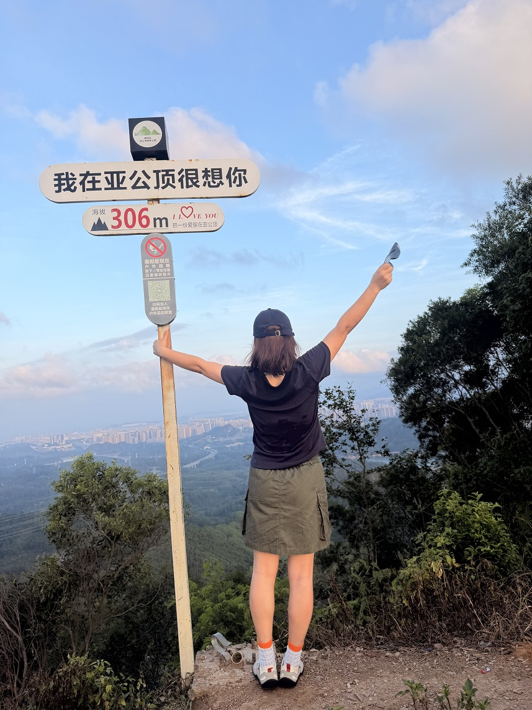
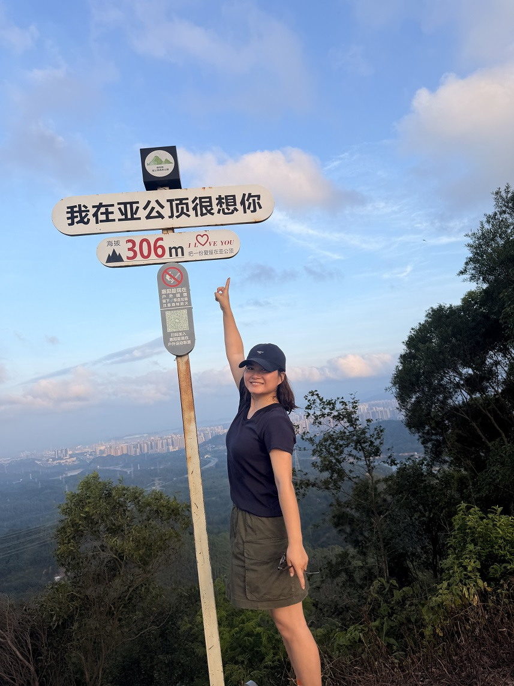
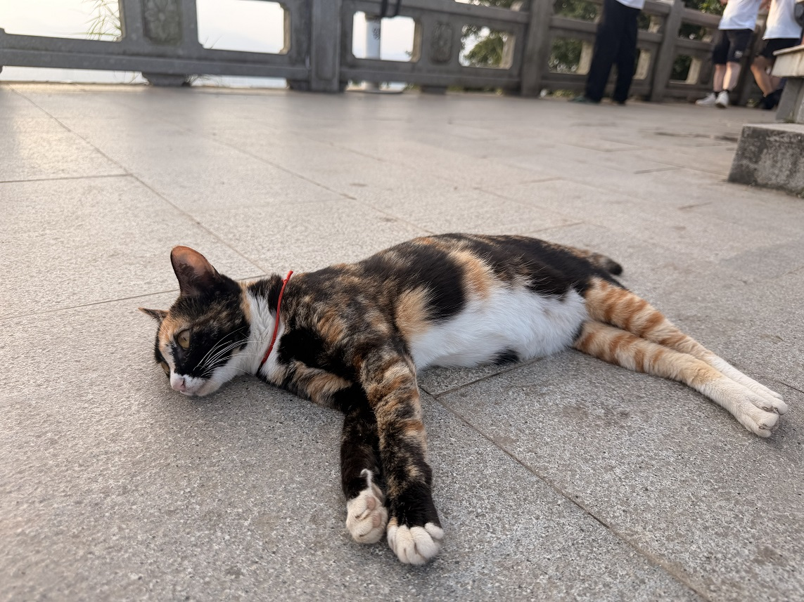
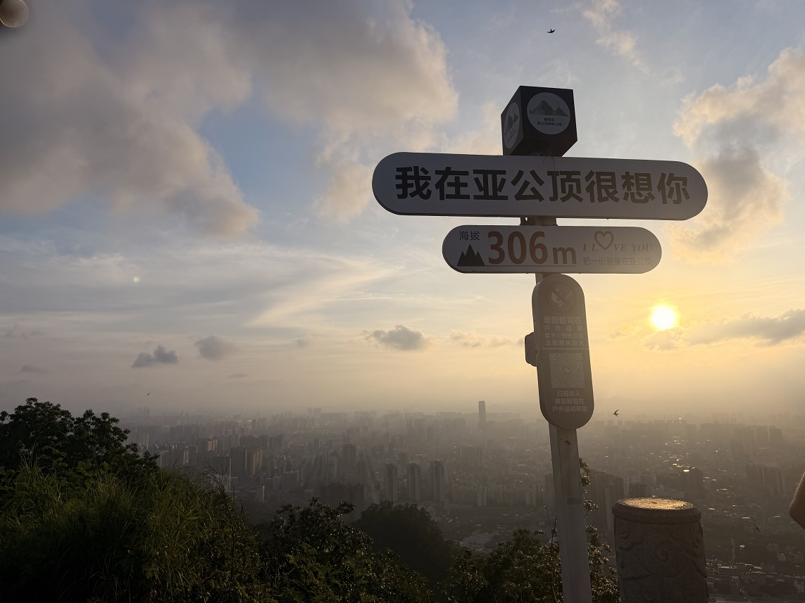
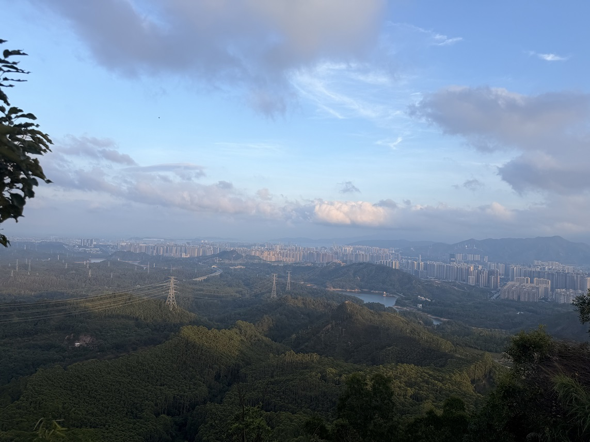
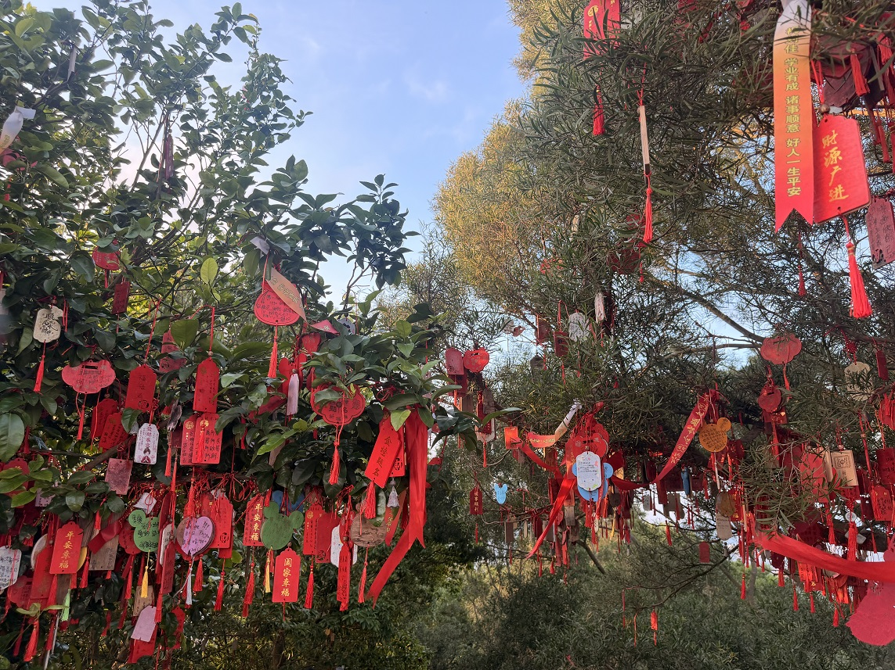

上周去了惠阳的亚公顶。🏔️ 早就听说那里的风景很美，大片大片的绿，远处是城市的轮廓线。说走就走，出发！
⛰️ 上山：曲折而艰难的路
亚公顶的山路并不好走。刚上山时还兴致勃勃，但很快就会发现——这条路，是真的曲折。弯弯曲曲的台阶，时陡时缓的坡道，每一步都在挑战体力。

越往上走，路越难爬。坡度越来越陡，呼吸也越来越急促。中途歇了好几次，每次都想"要不还是回去吧"。但抬头看看还有好长一段路，只能咬咬牙继续坚持。

不过山路两旁的景色确实没得说。满眼都是绿色，树木遮天蔽日，阳光从叶缝里洒下来，在地上投下斑驳的光影。山间的空气清新得让人忍不住多深呼吸几口。

🌄 登顶：快乐是完全属于自己的
终于登顶了！当最后一个陡坡被甩在身后，眼前的视野豁然开朗——

那一刻的成就感，真的无法用语言形容。站在山顶上，风吹过来，远处的城市像模型一样铺展开来。 Hills连绵起伏，绿色的植被覆盖了每一寸土地。虽然汗流浃背，但心里那股兴奋劲儿，真的难以言表。
登顶的快乐是完全属于自己的。那种"我做到了"的感觉，让之前所有的辛苦都值得了。

📸 沿途的风景碎片
在山顶和下山途中，又记录了一些美丽的瞬间——



后记 💪
亚公顶这次徒步，让我深刻体会到一句话：最艰难的那段路，往往通向最美的风景。
上山的路曲折艰难，但登顶的快乐是完全属于自己的。加油，下一次还要来！
— Jessie